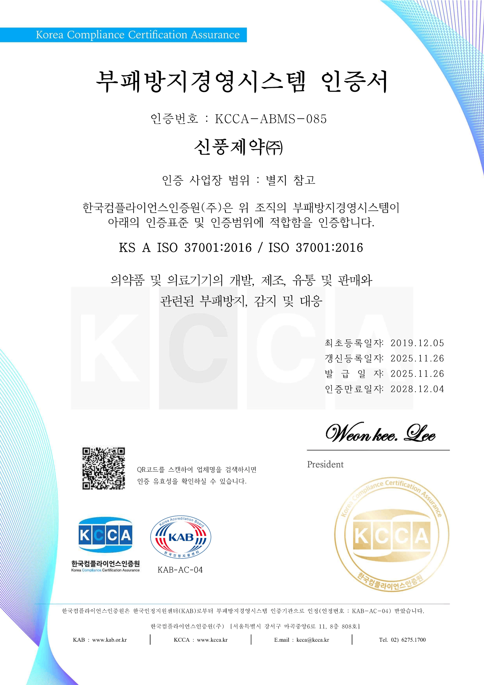
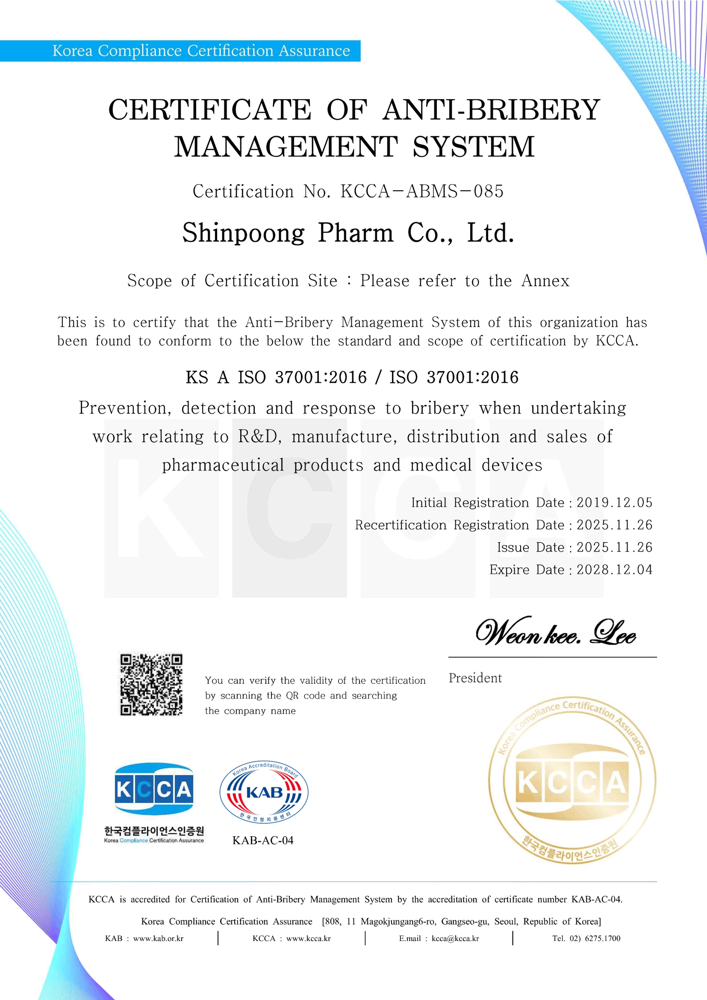

윤리경영ETHICS & COMPLIANCE
신풍제약은 투명하고 공정한 경영을 실천하며, 책임과 신뢰를 바탕으로 올바른 기업문화를 만들어갑니다.
자율준수의지 선언문
대표이사 유 제 만우리 신풍제약은 1962년 설립하여 “민족의 슬기와 긍지로 인류의 건강을 위하여” 라는 사시를 바탕으로 인간생명 존중이라는 최선의 가치를 위해 노력하는 정직하고 건강한 제약기업으로서 고객, 주주, 지역사회를 위한 사회적 책임을 다 하기 위하여 노력하고 있습니다.
지금까지 여러분들이 회사의 지속 성장을 위해 여러 현장에서 맡은 일에 최선을 다하던 노력을 토대로, 이제 개인과 회사가 함께 지속적인 성장을 이루기 위해 투명하고 공정한 가치를 추구하며 사회적 책임을 다 하고자 합니다.
우리는 그 동안 여러 교육과 캠페인을 통해 부패방지경영시스템(ISO 37001) 및 Compliance의 중요성을 인식하고 이를 준수하기 위해 노력해 왔습니다.
최근 들어 여러 업계와 기관에서 윤리경영 정착을 위해 다양한 활동을 진행하며, 이와 관련된 인증을 취득하고 있는 것을 보니 사회적 가치 실현이 기업 경영의 또 다른 목표가 되고 있다는 것을 느끼게 됩니다.
윤리경영을 실천하기 위한 가시적인 성과도 중요하지만 더 중요한 것은 우리 모두가 합리적인 업무 수행을 위해 일을 바라보는 관점과 태도를 점검하는 데 있다고 보며, 아울러 회사 내에도 공정한 문화를 만들어 가는 것 또한 우리들의 또 다른 목표이자 방향입니다.
기본을 갖추는 것이 어려운 일처럼 보일지라도 제대로 세워 가면 강력한 성장 동력으로 작용할 것이고, 저성장 시대 속 급변하는 열악한 환경에서도 기업의 경쟁력을 키워가는 토대를 마련하는 것이 될 것입니다.
조직 구성원 한 사람의 작은 욕심은 큰 무질서를 부르고 작은 양보는 큰 질서를 이루어 갑니다. 단순한 선언에 그치지 않고 함께 실천하는 조직문화 속에서 CP 준수와 함께 투명하고 공정한 가치를 실현해가는 신풍가족 여러분이 되었으면 합니다.
감사합니다.
자율준수제도(CP)
"CP"란 공정거래 관련 법규를 준수하기 위해서 자체적으로 제정 · 운영하는 교육, 감독 등 내부 준법 시스템을 말합니다.
CP의 8요소
-
- counter_1 CP 기준과 절차 마련
- 공정거래 관련 법규를 준수할 기준과 절차를 마련하고 시행
-
- counter_2 최고경영자의 자율준수 의지
- 최고경영자가 자율준수 의지를 표명하고 CP 운영을 적극 지원
-
- counter_3 자율준수관리자 임명
- 자율준수관리자를 임명하고 CP 운영에 대한 책임과 권한을 부여
-
- counter_4 자율준수편람 제작·활용
- 공정거래 법규와 CP 기준을 담은 자율준수편람을 제작하고 활용
-
- counter_5 자율준수교육 실시
- 임직원을 대상으로 공정거래 법규와 CP 기준에 대한 교육을 실시
-
- counter_6 내부감시체계 구축
- 위법행위를 예방하고 조기에 발견할 수 있도록 감시·감사 시스템을 구축
-
- counter_7 위반 임직원 제재
- 공정거래 법규 위반 시 책임과 위반 정도에 따른 제재를 실시
-
- counter_8 효과성 평가 및 개선
- CP 운영 현황을 정기적으로 점검·평가하고 필요한 개선조치를 시행
CP교육과정
- 집합교육 CP리스크가 높은 영업/마케팅본부, 연구/개발본부를 중심으로 진행
- 외부강사초청교육 CP교육시 외부강사를 초청하여 보다 더 전문적인 교육진행
- 온라인교육 오프라인 교육이 불가능하거나, 업무시간을 효율적으로 이용하기 위하여 온라인교육 진행
- 신입사원정기교육 반기별 신입사원에 대한 정기 교육시 진행
윤리·준법 시스템
부패방지경영시스템
"ISO 37001"이란 뇌물수수를 방지하고 부패 상황을 탐지, 해결하기 위해 국제표준화기구(ISO)가 개발한 새로운 부패방지경영시스템의 국제표준을 말합니다. 신풍제약은 다음과 같은 전사적인 활동을 통해 부패방지경영시스템(ISO 37001)을 고도화 시키고, 윤리 경영을 내재화 시키는데 노력하고 있습니다. 신풍제약은 부패방지경영시스템(ISO 37001)을 2019년 12월에 최초 도입하여 3년 주기의 갱신심사를 2022년에 이어 2025년에도 통과하였습니다.


사이버감사실
사이버 감사실은 신풍제약 내 독립부서로 회사에 대한 경영감사 및 부정감사 업무를 수행하고 있습니다. 그룹사 임직원의 불공정한 업무처리나 직위를 이용한 부당한 요구 및 비리 사실에 대한 제보를 받으며 비공개 방식으로 처리됩니다.
귀하의 용기 있는 제보와 소중한 한마디가 부정부패가 없는 투명경영의 초석이 될 뿐 아니라 그룹사 및 이해관계자 모두의 발전에 도움이 됩니다.
“여러분의 소중한 의견을 자유롭게 제안 해주세요.”
상임감사와 제보자간의 1:1 접속 방식(제3자 비공개)으로 운영됩니다.